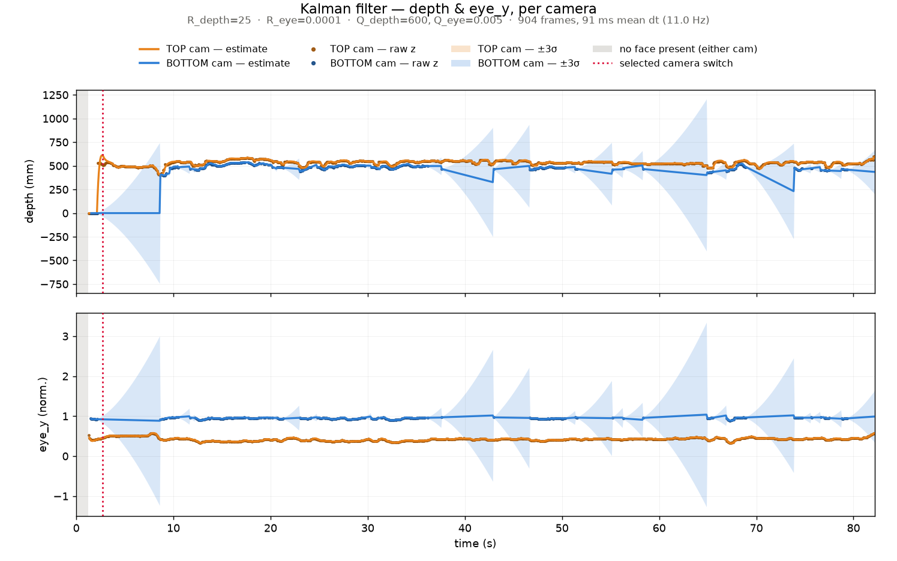
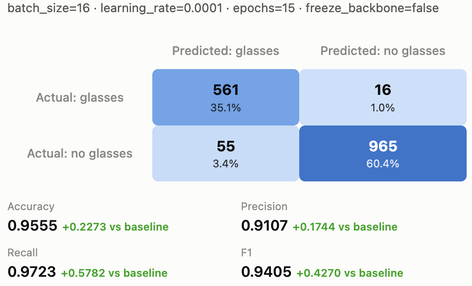

01 / Kalman Filtering for Session Face Tracking
Raw facial landmark detections are noisy frame-to-frame, especially during fast head movement or brief occlusion. I designed a state-tracking Kalman filter to smooth the tracked face position over time, using a constant-velocity motion model to predict pose and correct with new measurements.
State Machine
During a vision test, the system aims a mirror to meet the user's constantly moving gaze. Rather than following the eyes directly and having the motors chase every glance, the state machine provides a smooth estimate of the user's velocity and the sensor's drift, and a two-state controller decides when to act on it. The first state waits for a tuned stability threshold before proposing a new motor position, and the second state holds until the user drifts away from a tolerance band to trigger recalculation. That band is deliberately asymmetric: wide for downward movement, since looking down is almost always a passing glance, and tight for upward movement, since looking up means returning attention to the test. With any new motor commands, the controller eases into position to prevent snappy movements and to absorb sudden unpredicted movement.
Kalman Filter
The filter tracks depth \(d\) and eye position \(e\) along with their rates. Since the process and noise models are block-diagonal in \(d \perp e\), the 4-D filter is numerically identical to one independent 2-D filter per signal, so everything below is written per signal with state \(x = \begin{bmatrix} p & \dot{p} \end{bmatrix}^{\top}\).
Predict
\[ \hat{x}_{k \mid k-1} = F_k \hat{x}_{k-1 \mid k-1}, \qquad P_{k \mid k-1} = F_k P_{k-1 \mid k-1} F_k^{\top} + Q_k \]
\[ F_k = \begin{bmatrix} 1 & \Delta t_k \\ 0 & 1 \end{bmatrix}, \qquad Q_k = q \begin{bmatrix} \tfrac{1}{3}\Delta t_k^{3} & \tfrac{1}{2}\Delta t_k^{2} \\ \tfrac{1}{2}\Delta t_k^{2} & \Delta t_k \end{bmatrix} \]
There is no control term — nothing the system does drives the user’s head. \(\Delta t_k\) is the measured frame interval rather than a nominal frame rate, and \(Q_k\) is a discretized white-noise-acceleration model of how hard the head can accelerate between frames (\(q_d = 10\ \text{mm}^2/\text{s}^3\), \(q_e = 0.5\ \text{s}^{-3}\)).
Update
\[ K_k = P_{k \mid k-1} H^{\top} S_k^{-1}, \qquad S_k = H P_{k \mid k-1} H^{\top} + R \]
\[ \hat{x}_{k \mid k} = \hat{x}_{k \mid k-1} + K_k \underbrace{\left( z_k - H \hat{x}_{k \mid k-1} \right)}_{\text{innovation } y_k}, \qquad P_{k \mid k} = \left( I - K_k H \right) P_{k \mid k-1} \]
Only position is measured (\(H = \begin{bmatrix} 1 & 0 \end{bmatrix}\)); velocity is never observed directly and is inferred through the position–rate coupling in \(F_k\). The measurement noise \(R\) is constant, characterized once from a static recording of the sensor (\(\sigma_d \approx 5\ \text{mm}\), \(\sigma_e \approx 0.158\)). The gain \(K_k\) is the self-adjusting trust ratio between prediction and measurement, which is what let me drop the hand-tuned smoothing constant the tracker used before.
On the first valid measurement the filter initializes to \(\hat{x}_0 = \begin{bmatrix} z_0 & 0 \end{bmatrix}^{\top}\) with a deliberately large velocity variance, encoding low initial confidence so the first few frames dominate the rate estimate.
This kalman filter state machine results in a mirror that tells the difference between a glance and a genuine gaze reposition.

02 / Monocular Eye Tests
um
03 / Glasses Detection
Halfway through a vision test, glasses users are prompted to remove their glasses, otherwise the session would become invalid. I trained a vision transformer classifier model to detect glasses-users.
To ensure a generaizable model, I curated and labeled an internal diverse training set capturing a range of skin tones, lighting, environments, and glasses thicknesss (thin/thick/no frame, tinted, etc.). I split the 5133 image dataset into Training (55%), Validation (15%), and Testing (30%). Running the base model against the testing subset yielded: accuracy–0.72 / precision–0.73 / recall–0.39 / f1–0.5.
To improve the base model, I trained a series of model by performing a parameter sweep across the learning rates, batch size, optimizers, and epoch. The best model yielded: accuracy–0.95 / precision–0.91 / recall–0.97 / f1–0.94. (See plotted models below)

Upon further testing on hardware, I noticed a high inference latency time. The system requires an inference quickly to reduce session lag on the user end. I optimized this by training my own model from scratch with a small vision transformer. The new models performed similarly to the best models from earlier, but the median inference time reduced by 4.6 times (from 1656ms to 350ms).
I built a new feature to the vision test workflow to classify users wearing glasses by training and optimizing a vision transformer model.